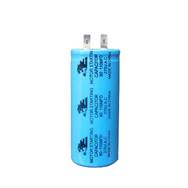
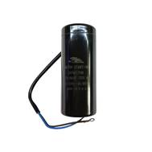
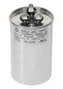
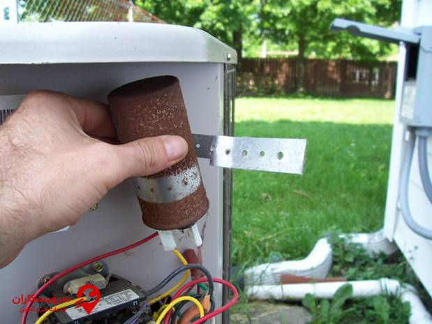

مقاله فنی درباره کولرگازی
انواع کولر گازی
فرض کنید تمام کولرهای گازی عین هم باشند در یک اندازه و ظرفیت یکسان
خیلی از افراد نیاز به ظرفیت بالا ندارند و میخواهند از یک کولر گازی کوچکی برای خنک کردن اتاق خود استفاده کنند.
پس با این وجود اگر تمام مدلها یک ظرفیت یکسان داشته باشند این شخص از خرید کولر گازی منصرف میشود.
از این رو کمپانیهای سازنده کولر گازی برای اینکه مشتریان خود را از دست ندهند کولرهای گازی را در انواع مختلف طراحی کرده اند که هر فرد بتواند از این دستگاه در محیطهای مختلف استفاده کند.
موارد زیر از انواع کولرهای گازی موجود در بازار جهانی است.
یونیت یا مدل پنجره ای
مدل اسپلیت یا دو تکه
کولر گازی مدل پرتال
داکت اسپلیت
کولرهای گازی مولتی اسپلیت
مدل سقفی و زمینی
کولرهای گازی مرکزی(ایستاده)
تعمیر کولر گازی یکی از بزرگ ترین دغدغه های تمامی مصرف کنندگان کولر گازی خصوصا در فصول گرم سال می باشد.که تعمیر کولر گازی به صورت کاملا اصولی،می تواند تا حد زیادی از بروز چنین مشکلاتی جلوگیری کند.علت روشن نشدن کولرگازی ممکن است تحت تاثیر نقص عملکرد در برد دستگاه باشد؛ بنابراین توصیه می شود در صورت بروز چنین مشکلی هر چه سریع تر به رفع آن بپردازید
اگر چنین مشکلی را در شروع فصل گرما مشاهده کردید،اصلا نگران نباشید؛ چرا که می توانید با کمک گرفتن از متخصصین مجرب نسبت به رفع و برطرف کردن آن بپردازید.
کولر گازی ممکن است تحت تاثیر دلایل مختلفی دچار مشکل شود،به طور ناگهانی خاموش شود و دیگر روشن نشود.در ادامه این مطلب ما به توضیح ۶ مورد از رایج ترین علت روشن نشدن کولر گازی می پردازیم.شما می توانید با سپردن تعمیر کولر گازی خود به یک متخصص و سرویس دوره ای آن موجب سهولت استفاده خود از این دستگاه در طول تابستان گرم امسال شوید
1-اتصالات برقی از شایع ترین علل عدم روشن شدن کولرگازی اتصالات برقی می باشد.بنابراین بهتر است اولین گام در صورت مشاهده خاموش شدن ناگهانی دستگاه،چک کردن اتصالات برق خانه باشد؛ تا پس از اطمینان از سالم بودن آن به بررسی سایر علل احتمالی بپردازید.به عنوان مثال کولرهای گازی جنرال به مقدار ۲۲۰ ولت برق نیاز دارند و در صورت منتقل نشدن این میزان برق،دستگاه ممکن است مشکلات گفته شده را به دنبال خواهند داشت
2-خرابی سیستم تهویه در صورت خراب شدن سیستم تهویه مرکزی کولر،می توان آن را به عنوان مهم ترین علت روشن نشدن کولر گازی نامید.برای رفع آن ابتدا به کنترل و تنظیم ترموستات دستگاه خود بپردازید.در صورت رفع نشدن مشکل حتماً با نوین سرمایش ابهر ارتباط برقرار کنید
3-برفک زدن لوله ها به عنوان یکی از مشکلات رایج این دستگاه برفک زدن لوله های کندانسور را لازم است جدی بگیرید.کاهش میزان شارژ گاز دستگاه یا کثیف بودن فیلتر هوا ممکن است علت برفک زدن لوله ها باشند.برای برطرف کردن برفک،تنها لازم است فیلترها را تمیز کنید.نکته قابل توجه در این شرایط ریست نکردن دستگاه تحت هیچ شرایطی است
4-کثیف بودن فیلتر یکی از مشکلاتی که ممکن است کثیف بودن فیلتر کولر گازی به دنبال داشته باشد،خاموش شدن ناگهانی و عدم روشن شدن مجدد دستگاه می باشد.بنابراین لازم است به صورت دوره ای به تمیز کردن و سرویس کولر گازی خود بپردازید تا از چنین مشکلاتی پیشگیری کنید
5-خرابی کندانسور و فن کندانسور با وظیفه خارج کردن گرمای منزل یکی از نقش های اساسی را در عملکرد کولرهای گازی بر عهده دارد؛ که در این صورت هر گونه نقص فنی در عملکرد این قطعه ممکن است علت روشن نشدن کولر گازی باشد.جهت برطرف کردن این مشکل در صورت مشاهده هر گونه کاهش کارآیی سازه خود حتماً از سالم بودن این قطعات اطمینان حاصل کنید
6-گرفتگی در مسیر جریان گاز یکی از علل عدم روشن شدن این دستگاه ها می تواند گرفتن مسیر جریان گاز باشد.بنابراین کنترل هر چند وقت یکباره آزاد بودن مسیر،در افزایش عملکرد سازه بسیار حائز اهمیت می باشد.اما توصیه می شود که در صورت مشاهده گرفتگی مسیر حتماً از یک سرویس کار کولر گازی حرفه ای جهت رفع آن کمک بگیرید
کدهای خطای نشان دهنده روشن نشدن کولر گازی کدهای خطا پیام هایی هستند که به وسیله حروف انگلیسی بر روی صفحه نمایشگر کولرگازی نمایش داده می شوند؛ تا مصرف کننده را از عملکرد صحیح قطعات و بروز هر گونه مشکلی در آن ها با خبر سازد.به عنوان مثال در انواع کولرهای گازی جنرال حروف df نشان دهنده حالت دیفراست در این دستگاه می باشد؛ که در این شرایط تا چند دقیقه بخش های داخلی سازه فعالیت خود را متوقف می کنند.آشنایی با انواع کدهای خطا در شناخته علت روشن نشدن کولر گازی می تواند بسیار کمک کننده باشد
سرویس و نگهداری کولرگازی نیاز به داشتن اطلاعات تخصصی از نحوه استقرار پنل داخلی و خارجی کولرگازی،لوله کشی های توکار کولر گازی و سایر انواع لوله کشی ها،اتصالات شیلنگ کندانسور و رطوبت زدایی سیستم،عایق بندی لوله های مبرد یا گاز،تست نشتی گاز و شارژ اولیه گاز کولرگازی دارد.به علاوه،داشتن این اطلاعات به تنهایی کافی نبوده و حتماً تجربه قبلی نصب اسپیلت کولرگازی نیز می بایست به آن اضافه شود
در صورت نصب و شارز گاز کولرگازی به صورت اشتباه،مشکلاتی چون افزایش مصرف برق،سر و صدای زیاد،نشتی گاز،خنک نکردن کولرگازی،پرتاب آب به همراه باد و مشکلات که می تواند بهای سنگینی برای شما داشته باشد،رخ خواهد داد.به همین دلیل بهترین نصاب کولر گازی یا تکنسین های متخصص نصب کولر گازی را می توانید در تعمیرکار کولرگازی بیابید.کارشناسان خبره و باتجربه تعمیرکار کولرگازی هیچ جای نگرانی بابت نصب صحیح و شارژ کولرگازی و تعمیر تخصصی و حرفه ای کولر گازی را برای شما مشتریان گرامی و عزیز باقی نمی گذارند
این شرکت برای رفاه حال شما عزیزان ، علت کد خطای کولر گازی برندهای مختلف را تحت پوشش قرار داده است ، تا چنانچه فنی هستید با اطلاعات زیر ، به رفع عیب کولر خود بپردازید ، همچنین در نظر داشته باشید با دانش نسبت به ارور کولر گازی ، به راحتی میتوانید آن را به تعمیرکار کولر بسپارید
|
کد خطای کولر گازی ال جی |
|
|
کد خطا |
علت بروز خطا |
|
CH01 |
بروز خطا در سنسور هوای داخلی |
|
CH02 |
سنسور لوله ورودی که به یونیت داخلی وصل است دچار مشکل شده است. |
|
CH05 |
ارتباط یونیت داخلی و خارجی به مدت سه ثانیه قطع شده است. |
|
CH06 |
سنسور لوله خارجی که به یونیت داخلی متصل است دچار مشکل شده است. |
|
CH09 |
این ارور برای نمایش بروز اختلال در عملکرد سیم کشی برد می باشد. |
|
CH10 |
موتور فن داخلی دچار مشکل اساسی شده است. |
|
CH12 |
سنسور لوله وسطی که به یونیت داخلی متصل است دچار مشکل شده است. |
|
CH21 |
ولتاژ ورودی CD بالا است. |
|
CH22 |
جریان ورودی برق بیشتر از حدی است که برای آن تعیین شده است. |
|
CH23 |
ولتاژ ورودی CD پایین است. |
|
CH26 |
جریان فازی دچار اختلال شده است. |
|
CH29 |
جریان ورودی به کمپرسور بالا است و دچار اختلال شده است. |
|
CH32 |
دمای کمپرسور بالا رفته و بیشتر از حد معمول است. |
|
CH40 |
در صورت مواجه شدن با این ارور باید بدانید که ارور نشان دهنده خرابی یکی از سنسورهای روی برد است. |
|
CH41 |
سنسور کمپرسور دچار اختلال شده است. |
|
CH44 |
بروز اختلال در سنسور دمای هوا به وجود آمده است. |
|
CH45 |
سنسور کندانسور دچار مشکل جدی شده است. |
|
CH46 |
سنسور لوله مکش با مشکل مواجه شده است. |
|
CH53 |
ارتباط یونیت داخل و خارجی به مدت سه دقیقه قطع شده است و هیچ گونه ارتباطی بین آن ها وجود ندارد. |
|
CH60 |
EEPROM دچار مشکل شده است و باید بررسی شود. |
|
CH61 |
سنسور کندانسور دچار مشکل شده است. |
|
CH67 |
سیگنال برگشتی دچار مشکل شده است. |
|
در ادامه کد خطای کولر گازی مدل چراغ دار را برای شما توضیح میدهیم. |
|
|
خطا |
علت بروز خطا |
|
2 بار سبز 2 بار قرمز |
جریان مبدل بسیار زیاد است. |
|
2 بار سبز 3 بار قرمز |
دمای لوله تخلیه بالا رفته است. |
|
3 بار سبز 2 بار قرمز |
ولتاژ ورودی پایین است و اجازه روشن شدن نمی دهد. |
|
3 بار سبز 6 بار قرمز |
دمای لوله ها پایین است. |
|
3 بار سبز 5 بار قرمز |
ارتباط بین یونیت داخلی و بیرونی دچار اختلال شده است. |
|
6 بار سبز 2 بار قرمز |
خطا در عملکرد کمپرسور |
|
6 بار قرمز |
EEPROM دچار مشکل شده است و باید بررسی شود. |
|
9 بار سبز 2 بار قرمز |
جریان کمپرسور بیشتر از حد مجاز است. |
|
8 بار سبز 4 بار قرمز |
سنسور لوله خروجی کندانسور دچار مشکل شده است. |
|
7 بار سبز 2 بار قرمز |
SCP خراب شده است |
|
7 بار سبز 6 بار قرمز |
فن قفل شده است و توانایی کار کردن ندارد |
|
5 بار سبز 6 بار قرمز |
سنسور لوله خروجی متصل به یونیت داخلی دچار مشکل شده است |
|
4 بار سبز 4 بار قرمز |
سنسور محیط بیرونی دچار مشکل شده است |
|
4 بار قرمز |
باز بودن سنسور TC |
|
1 بار سبز 3 بار قرمز |
TC پایین دچار مشکل شده است |
|
1 بار سبز 6 بار قرمز |
دمای لوله کندانسور بالا رفته |
|
در بخش بعدی شما را با ارور(کد خطا) کولر گازی ال جی مدل اینوتر آشنا خواهیم کرد. |
|
|
خطا |
علت بروز خطا |
|
1 |
یکی از سنسورها اتصال کوتاه شده |
|
2 |
بروز اختلال در عملکرد سنسور لوله ورودی به سیستم کولر گازی |
|
5 |
ارتباط یونیت خارجی و داخلی قطع شده است |
|
6 |
سنسور لوله خروجی دچار مشکل شده است |
|
21 |
ولتاژ جریان ورودی بالا است و cd دچار مشکل شده است |
|
22 |
جریان ورودی بالا بوده و باعث آسیب زدن به سنسور اورلود شده است |
|
23 |
ولتاژ ورودی پایین تر از حد مجاز بوده است. |
|
26 |
عملکرد کمپرسور دچار اختلال شده است و نمی تواند به درستی کار کند. |
|
27 |
قطعات scp خراب شده اند و نمی توانند به درستی کار کنند. |
|
29 |
جریان بیش از حد اندازه بالا رفته و باعث اختلال در عملکرد کمپرسور شده است. |
|
32 |
دمای کولر گازی بیش از حد اندازه بالا رفته است و دچار اختلال در عملکرد آن شده است و این احتمال وجود دارد که مشکل از ترموستات باشد. |
|
40 |
سنسور tc دچار اختلال شده است و نمی تواند به درستی کار کند. |
|
41 |
کمپرسور دچار اختلال شده است. |
|
44 |
سنسور هوای بیرونی دچار مشکل شده است. |
|
45 |
سنسور لوله میانی دچار اختلال شده است. |
|
48 |
لوله خروجی کندانسور دچار اختلال شده است. |
|
53 |
ارتباط یونیت داخلی و خارجی قطع شده است. |
|
60 |
حافظه EEPROM دچار اختلال شده است. |
|
61 |
دمای لوله کندانسور بالا رفته |
|
67 |
فن خراب شده است و امکان تعمیر آن هم وجود دارد. |
|
ارور کولر گازی سامسونگ |
|
|
خطا |
علت بروز خطا |
|
E1 01 |
ارتباط بین یونیت داخل و خارجی قطع شده است |
|
E1 21 |
بروز اختلال در قطعات و سیم کشی برد که باید بررسی و تعمیر شود |
|
E1 22 |
بروز خطا در سنسور ورودی کولر گازی و هم چنین برد دستگاه |
|
E1 25 |
بروز اختلال در عملکرد فازها است |
|
E1 54 |
این ارور کولر گازی نشان دهنده خرابی فن و یا سوختن آن باشد. |
|
E1 62 |
مشکل از EEPROM می باشد که برنامه نویسی کولر گازی را حذف می کند |
|
E1 63 |
در این حالت کولر گازی نیاز به کد نویسی جدید دارد |
|
E1 86 |
این پیغام برای نمایش خطای MPI است |
|
جدول بعدی ارور(کد خطا) کولر گازی مدل multipanel classic میباشد. |
|
|
خطا |
علت بروز خطا |
|
TO |
علت بروز این خطا نشان دهنده خرابی سنسور کندانسور می باشد. |
|
TB |
سیم کشی مدار برد بررسی شود |
|
TA |
بروز این ارور نشان دهنده خرابی سنسور لوله های کندانسور می باشد |
|
TC |
مقدار اهم سنسور کندانسور را بررسی کنید |
|
A |
نشان دهنده یونیت A در حال تست می باشد |
|
B |
بروز خطا در عملکرد یونیت B |
|
C |
بروز اختلال در عملکرد یونیت c در حال نصب |
|
G |
زمانی که کمبود گاز مبرد داشته باشد با این ارور مواجه خواهید شد |
|
بانک ارور کولر گازی جنرال و اجنرال |
|
|
خطا |
علت بروز خطا |
|
F1 |
محافظ سوخته و برد اصلی دچار مشکل شده است |
|
F2 |
محافظ دچار مشکل شده و برد هم نمی تواند به درستی کار کند. |
|
F3 |
محافظ با ولتاژ بالا دچار مشکل شده است. |
|
F4 |
محافظ با ولتاژ پایین دچار مشکل شده است |
|
F5 |
برد دچار مشکل شده و هم می تواند مشکل از گرمای زیاد باشد |
|
F6 |
اورلود دچار اختلال شده است |
|
F7 |
سنسور یونیت بیرونی دچار مشکل شده است. |
|
F8 |
محافظ ضد یخ دچار مشکل شده است |
|
F9 |
زمانی که این ارور را مشاهده کردید بدانید که دستگاه در حال یخ زدن است |
|
جدول بعدی ارور(کد خطا) کولر گازی جنرال و اجنرال بانه ای میباشد. |
|
|
خطا |
علت بروز خطا |
|
E2 |
سنسور محیطی کولر گازی دچار مشکل شده است |
|
E3 |
سنسوری که به اپراتور متصل است قطع شده است. |
|
E4 |
این ارور کولر گازی نشان دهنده بروز اختلال در یونیت خارجی |
|
E5 |
فن با مشکل مواجه شده و یا سوخته است |
|
E7 |
کابلی که اتصال یونیت داخلی و خارجی را برقرار می کند دچار مشکل شده است |
|
E8 |
خرابی کندانسور |
|
DF |
یخ زدایی |
|
ارور یا کد خطا کولر گازی جنرال و اجنرال مدل گلد را در جدول بعدی برای شما نمایش خواهیم داد. |
|
|
خطا |
علت بروز خطا |
|
F7 |
دیفراست دچار اختلال شده است |
|
F8 |
سنسور پایپ، سنسور متصل به اپراتور است و دچار مشکل شده است |
|
F9 |
سنسور محیطی دچار اختلال شده است |
|
بانک ارور کولر گازی گری |
|
|
خطا |
علت بروز خطا |
|
E01 |
سنسور دما دچار مشکل شده و یا کلا خاموش است |
|
E02 |
دستگاه هنگ کرده و باید مدت زمان کمی استراحت کند |
|
E03 |
کمپرسور دچار افت فشار شده است |
|
E04 |
دستگاه دچار مشکل شده است که باید آن را خاموش و پس از مدتی دوباره روشن کنید |
|
P02 |
بار اضافی دستگاه باعث بروز این خطا است |
|
P03 |
دمای اپراتور تنظیم نیست و خیلی پایین است |
|
P04 |
دمای دستگاه پایین است |
|
P05 |
دمای دستگاه بیش از حد پایین است |
|
ارور(خطا) کولر گازی اینورتر را در جدول بعدی مشاهده خواهید کرد. |
|
|
خطا |
علت بروز خطا |
|
E1 |
این ارور کولر گازی نشان می دهد که محافظ فشار زیادی را تحمل می کند |
|
E2 |
از یخ زدگی جلوگیری می کند |
|
F1 |
یونیت داخلی با مشکل روبرو شده است |
|
F2 |
سنسور اپراتور دچار مشکل شده است |
|
H3 |
این ارور کولر گازی نشان دهنده این است که اورلود دچار اختلال شده است |
|
H4 |
سیستم به صورت نرمال نمی تواند کار کند |
|
HC |
محافظ CFP به مشکل برخورده است |
|
ارور کولر گازی بوش |
|
|
خطا |
علت بروز خطا |
|
E0 |
برد دستگاه دچار مشکل شده است |
|
E1 |
محافظ سیستم فشار زیادی را تحمل می کند |
|
E2 |
قسمت ضد یخزدگی دچار مشکل جدی شده است |
|
E4 |
دما رفت کمپرسور دچار مشکل شده است |
|
E5 |
محافظ جریان بسیار زیاد شده است |
|
E6 |
کابل ارتباطی بین یونیت داخلی و خارجی دچار مشکل شده است |
|
E8 |
دمای مقاومت بسیار بالا رفته است |
|
H6 |
فن داخلی کولر گازی دچار مشکل شده است |
|
F1 |
سنسور محیطی یونیت داخلی دچار اختلال شده است و نمی تواند به درستی کار کند |
|
F2 |
بروز اختلال در عملکرد سنسور اپراتور |
|
F3 |
سنسور محیطی یونیت خارجی دچار اختلال شده است |
|
F4 |
سنسور مربوط به کندانسور دچار مشکل شده است |
|
F5 |
بروز اختلال در عملکرد لوله رفت کمپرسور |
|
F6 |
اورلود دچار اختلال شده است |
|
U5 |
جریان بین یونیت ها قطع شده است |
|
H1 |
زمانی این ارور کولر گازی نمایش داده می شود که یخ زدایی انجام شود |
|
H3 |
اورلود دچار مشکل شده است |
|
H4 |
سیستم به صورت نرمال کار نمی کند |
|
H5 |
محافظ MPI نمی تواند به درستی کار کند |
|
HC |
محافظ CFP دچار مشکل شده است |
|
U1 |
درون جریان فاز کمپرسور اختلال به وجود آمده است |
|
بانک ارور کولر گازی میتسوبیشی |
|
|
خطا |
علت بروز خطا |
|
E1 |
بروز خطا در حافظه و پاک شدن کدهای برنامه نویسی آن |
|
E3 |
فن دچار مشکل شده است و امکان خرابی موتور و یا سوختگی سیم ها وجود دارد |
|
E4 |
کمپرسور بیشتر از حد مجاز برق مصرف می کند |
|
E5 |
سنسور دما دچار مشکل شده است و نمی تواند به درستی کار کند |
|
E6 |
ترمیستور پایپ مسی دچار مشکل شده است همچنین می تواند علت آن خرابی برد و یا قطعات آن باشند |
|
E7 |
سنسور کندانسور دچار مشکل جدی شده است |
|
E9 |
ارتباط بین یونیت داخلی و خارجی دچار اختلال شده است |
|
بانک ارور کولر گازیهایسنس |
|
|
خطا |
علت بروز خطا |
|
0 |
هیچ مشکلی وجود ندارد |
|
1 |
سنسور دما در یونیت خارجی دچار مشکل شده است |
|
2 |
سنسور تخلیه شارژ دچار مشکل جدی شده است |
|
5 |
سنسور MPI دچار مشکل شده است |
|
6 |
ولتاژ ورودی برق به صورت ناگهانی زیاد شده است |
|
8 |
برد یونیت خارجی دچار مشکل جدی می باشد |
|
9 |
کمپرسور دچار مشکل جدی شده است |
|
11 |
حافظه یونیت خارجی دچار مشکل جدی شده است |
|
13 |
فیلترهای هوا به تعویض نیاز دارند |
|
14 |
سنسور دما و برد یونیت خارجی خراب شده است |
|
15 |
سنسور محافظ اورلود کمپرسور دچار مشکل شده است |
|
16 |
ضد یخ در حال انجام کار است |
|
18 |
کمپرسور راه اندازی نمی شود |
|
33 |
سنسور دما دچار مشکل شده است |
اصول لوله کشی کولر گازی ۲ تیکه ( اسپیلت )

برای لوله کشی کولر گازی : شما باید این نکات را در نظر بگیرید تا از اشتباهات پر هزینه اجتناب گردد
سایز صحیح لوله ها
قبل از هر کاری یک تکنسین متخصص برای بازدید محل بیاورید تا مشخصات و قدرت کولر گازی مناسب برای فضای شما را تشخیص دهد تا لوله های مسی مناسب آن کولر گازی را خریداری و نصب کنید . در خیلی از موارد دیده شده سازنده و یا پیمانکر لوله های مسی برای کولر گازی داخل دیوار ها نصب کرده اند که برای کولر گازی مناسب آن فضا متناسب نبوده و باعث هزینه های بالا برای تعویض و نصب مجدد لوله های کولر گازی شده
برای ارتباط بین پنل داخلی و خارجی اسپلیت ها نیاز به دو نوع لوله میباشد. قطر لوله ها بر حسب میلیمتر و اینچ محاسبه میگردد. که هر اینچ معادل ۲۵/۴ میلیمتر میباشد
لوله کشی کولر گازی
|
سایز لوله |
مدل اسپلیت اوجنرال |
|
۶ و ۱۰ |
اسپلیت معمولی ۹۰۰۰ |
|
۶ و ۱۲ |
اسپلیت معمولی ۱۲۰۰۰ |
|
۱۰ و ۱۶ |
اسپلیت معمولی ۱۸۰۰۰ |
|
۱۰ و ۱۶ |
اسپلیت معمولی ۲۴۰۰۰ |
|
۱۰ و ۱۶ |
اسپلیت معمولی ۳۰۰۰۰ |
|
۶ و ۱۰ |
اسپلیت اینورتر ۹۰۰۰ |
|
۶ و ۱۰ |
اسپلیت اینورتر ۱۲۰۰۰ |
|
۶ و ۱۶ |
اسپلیت اینورتر ۱۸۰۰۰ |
|
۶ و ۱۶ |
اسپلیت اینورتر ۲۴۰۰۰ |
|
۱۰ و ۲۰ |
اسپلیت اینورتر ۳۰۰۰۰ |
لوله کشی کولر گازی
|
سایز لوله |
مدل اسپلیت سامسونگ _ ال جی |
|
۶ و ۱۰ |
اسپلیت معمولی ۷۰۰۰ |
|
۶ و ۱۰ |
اسپلیت معمولی ۱۰۰۰۰ |
|
۶ و ۱۲ |
اسپلیت معمولی ۱۳۰۰۰ |
|
۶ و ۱۲ |
اسپلیت معمولی ۱۸۰۰۰ |
|
۶ و ۱۶ |
اسپلیت معمولی ۲۴۰۰۰ |
|
۶ و ۱۶ |
اسپلیت معمولی ۳۲۰۰۰ |
|
۱۰ و ۲۰ |
اسپلیت معمولی ۳۶۰۰۰ |
|
۱۰ و ۲۰ |
اسپلیت معمولی ۴۵۰۰۰ |
لوله کشی کولر گازی
|
سایز لوله |
مدل اسپلیت هایسنس _ گری _ جنرال _ میدیا |
|
۶ و ۱۰ |
اسپلیت معمولی ۹۰۰۰ |
|
۶ و ۱۲ |
اسپلیت معمولی ۱۲۰۰۰ |
|
۶ و ۱۲ |
اسپلیت معمولی ۱۸۰۰۰ |
|
۱۰ و ۱۶ |
اسپلیت معمولی ۲۴۰۰۰ |
|
۱۰ و ۱۶ |
اسپلیت معمولی ۳۰۰۰۰ |
|
۶ و ۱۰ |
اسپلیت اینورتر ۹۰۰۰ |
|
۶ و ۱۲ |
اسپلیت اینورتر ۱۲۰۰۰ |
|
۶ و ۱۲ |
اسپلیت اینورتر ۱۸۰۰۰ |
|
۶ و ۱۶ |
اسپلیت اینورتر ۲۴۰۰۰ |
|
۱۰ و ۱۶ |
اسپلیت اینورتر ۳۰۰۰۰ |
لوله کشی کولر گازی
تمیزی کار
تمیزی لوله ها یکی از عوامل کلیدی در نصب می باشد. گرد و خاک , کثیفی و یا رطوبت باعث نابودی زود هنگام سیستم کولر گازی می شود و بایستی از آنها دوری شود. پس حتما قبل از هر کاری ابتدا و انتهای لوله ها را با بست و عایق مسدود کنید تا در مراحل نصب لوله ها و تا پایان کار ساختمانی و مرحله نصب کولر گازی گرد و خاک و رطوبت وارد لوله ها نشود.
عایق بندی
هنگام نصب لوله توجه کنید که تمامی سطح لوله ها را با عایق بپوشانید چون لوله ها در هنگام کار کولر گازی رطوبت محیط را جذب میکنند پس در زیر کار ، داخل دیوار و یا جا هایی که از روی کار رد میشوند کاملا عایق کاری کنید و هر۵۰ سانتیمتر عایق را با بست کمربندی به لوله محکم کنید.
لوله خروجی آب
این قسمت نصب لوله تخلیه آب (رطوبت) بسیار مهم است. توجه داشته باشید که کولر گازی در هنگام کار رطوبت محیط داخلی را جذب میکند و برای همین یک مسیر تخلیه همین رطوبت در پنل داخلی طراحی شده حالا شما باید این لوله خروجی را دقیق با یک شیب ملایم از پنل داخلی به بیرون هدایت کنید . پس هنگام نصب لوله ها یک لوله پلاستیکی برای تخلیه آب کولر گازی به بیرون در نظر بگیرید و سعی کنید که طول این مسیر تا خروجی حدالمقدور کمترین مسافت باشد.
توجه
لوله کشی کولر گازی
مسیر لوله های مسی بسیار حاز اهمیت است سعی کنید کوتاه ترین مسافت بین پنل داخلی و بیرونی را انتخاب کنید و اصول صحیح نصب این است که پنل بیرونی ( کندانسور ) پایین تر از پنل داخلی نصب شود تا روغن کمپرسور به داخل پنل داخلی انتقال پیدا نکند ولی اگر به هر دلیلی نتوانستید این موضوع را رعایت کنید حتما باید بعد از خروجی لوله های کندانسور تله روغن بزنید
خازن خشک(راه انداز-استارت)

این خازن جهت کار متناوب وغیر دائم به کار می رود که دارای ظرفیت زیاد،ولتاژ کم نسبت به خازن روغنی است و به طور لحظه ای وارد مدار می گردد(1 تا 3ثانیه) وهمراه سیم پیچ استارت از مدار خارج می شود.خازن خشک با سیم- پیچ استارت سری بسته می شود ودر موتورهایی که سیم پیچ استارت آنها از مدار خارج می شود کاربرد دارد،در رله-های جریانی و ولتاژی کاربرد دارند.حداکثر استارت خازن خشک 6تا10 دفعه در ساعت می باشد.
خازن الکتریکی(روغنی یا دائم کار) در کولرگازی

این نوع خازن دارای ظرفیت کمترو ولتاژ بیشتر نسبت به خازن خشک می باشد و به طور دائم در مدار بصورت موازی بین سیم پیچ های(S)استارت و(R)رانینگ بسته می شود و مورد استفاده آن دررله های ولتاژی و اتصال مستقیم به کمپرسور می باشد

در کولرگازی از دونوع خازن روغنی اسفاده می شود
الف) خازن روغنی کمپرسور که ظرفیت آن در مدل های مختلف بین 25 تا60 میکرو فاراد می باشد
ب)خازن روغنی فن که ظرفیت آن در مدل های مختلف بین 3 تا 7 میکرو فاراد می باشد
خازن ها در کولر پنجره ای می توانند به صورت جداگانه و یا مشترک (دوبل) استفاده شوند
تست خازن کولرگازی: تعمیرکار کولرگازی جهت تعمیرویاسرویس کولرگازی باید با موارد زیرآشناباشد
به وسیله جریان برق:1-دو سر خازن را به مدت یک تا سه ثانیه به جریان برق وصل می کنیم سپس دوسرآن را به هم اتصال می دهیم اگر صدای تقه همراه با جرقه به رنگ آبی دیده شد خازن سالم است اما اگر جرقه ضعیف و به رنگ قرمز باشد خازن خراب است.در این روش باید نکات ایمنی رارعایت کنیم زیرا امکان ترکیدن آن وجود دارد
2-به وسیله تست لامپ:دراین روش یک لامپ 100 واتی راباخازن سری می کنیم سپس به جریان برق وصل می کنیم اگر لامپ روشن شد نشان دهنده سالم بودن خازن است درغیراین صورت خازن معیوب می باشد
3-به وسیله اهم متر:در لحظه اول خازن را اتصال کوتاه می دهیم تا جریانی وارد اهم مترنشود بعد رنج مناسب برای اهم متر را انتخاب می کنیم، اگر خازن نشتی داشته باشد عقربه اهم متر به طرف صفر و بتدریج به سمت بی نهایت بر می گردد و قبل از آن می ایستد.حال اگر خازن اتصال کوتاه شده باشد عقربه به سمت صفر رفته و روی آن می ماند
توضیحات کامل انواع کمپرسور کولر گازی ، موتور سنگین ، اسکرول پیستونی روتاری

تفاوت کمپرسور پیستونی اسکرول و روتاری _ موتور سنگین و سبک Scroll compressors, rotary and piston compressors
تفاوت کولر گازی موتور سنگین و سبک: شاید شما هم برای خرید کولر گازی به یک مغازه فروش کولر گازی مراجعه کردهاید و اصطلاحاتی شنیدهاید، مثلا کولر گازی موتور سنگین، کولر گازی موتور طلایی، موتور موشکی، موتور دراز و موتور خوشهای، ولی مفهومش رو دقیقا متوجه نشدهاید، اصطلاح موتور سنگین بیشتر برای کمپرسور های پیستونی استفاده میشود و لقب موتور موشکی، موتور دراز، موتور خوشهای برای کمپرسورهای روتاری و منظور از موتور طلایی رادیات طلایی میباشد یعنی کولر gold fines است. ما در این مطلب سعی میکنیم به صورت ساده انواع این کمپرسورها معایب و مزایای آنها را برای شما توضیح دهیم.
کمپرسور کولر گازی چیست؟
کمپرسور یا موتور کولر گازی یکی از اصلیترین اجزاء کولر گازی است که وظیفه گردش گاز را در مدار (سیکل) کولر گازی دارد. کمپرسورهای کولر گازی بر اساس نوع عملکرد و نوع گاز انواع متفاوتی دارند و هر کدام معایب و مزایای خاص خود را دارد.
بر اساس نوع کارکرد کمپرسور کلا سه نوع کمپرسور کولر گازی داریم:
کمپرسور پیستونی
کمپرسور پیستونی عملکردی مشابه سیلندر و پیستون خودرو داشته که با هر بار رفت و برگشت پیستون مقداری از گاز (مبرد) موجود در محفظه کمپرسور به داخل سیلندر مکیده شده و تحت تراکم قرار گرفته و با فشار به داخل سیستم هدایت میشود. کمپرسور پیستونی از کولرهای پرقدرت و البته پرمصرف کولر گازی هست و بیشتر به علت کار در دماهای بالا در جنوب کشور استفاده میشود.
مزایای کمپرسور پیستونی
کاربرد گسترده از لحاظ نوع گاز و کاربرد در صنایع مختلف
تنوع ظرفیت: این نوع از کمپرسورها از یخچالهای خانگی گرفته تا سیستمهای تهویه مطبوع (کولر گازی) و سردخانههای بزرگ کاربرد دارند.
معایب کمپرسور پیستونی
بازدهی انرژی پایین: کمپرسور پیستونی به علت مقاومت شیرها در تخلیه و مکش، نشت بین سیلندر و پیستونها، دارای بازدهی انرژی پایینی هستند.
حساس به ورود مبرد به صورت مایع: در صورت ورود مایع به محفظه تراکم، سر و صدا تولید شده و در ادامه کمپرسور آسیب میبیند.
ابعاد بزرگ و نسبت “ظرفیت به وزن” پایین در مقایسه با سایر کمپرسورها.
نگهداری نسبتا دشوار با توجه به ساختار پیچیدهای که کمپرسور پیستونی دارد.
لرزش به علت یکنواخت نبودن حرکت مبرد.
کمپرسور اسکرول (اسکرال)
کمپرسور اسکرول دارای دو صفحه مارپیچ است که یکی از آنها ثابت و دیگری متحرک است زمانی که گاز از دریچه ورودی به داخل محفظه میرود صفحه مارپیچ متحرک با چرخش ۳۶۰ درجه گاز را فشرده میکند کمپرسور اسکرول نسبت به تمام کمپرسورها از بازده و عملکرد بهتری برخوردار است و بیشترین بازده را میان کمپرسورهای اسپیلت دارد و قیمت آنها کمی بالاتر است. از اسکرال برای اسپیلت، چیلرها و دستگاههای تهویه مطبوع مرکزی نیز استفاده میشود. این نوع کمپرسور برای مناطق گرمسیری و بسیار گرم مناسب است، این کمپرسور بیشتر در قدرتها و توانهای بالا ۲۴۰۰۰ کاربرد دارد و نسبت به کولر پیستونی مصرف پایینتری دارد.
مزایا کمپرسور اسکرول نسبت به کمپرسور پیستونی:
کمپرسورهای اسکرول در مصرف انرژی نسبت به کمپرسورهای پیستونی ۲۵ الی ۳۰ درصد از بازدهی بالاتری برخوردارند.
کمپرسورهای اسکرول نسبت به کمپرسورهای پیستونی از لرزش و صدای بسیار کمتری برخورداند.
کمپرسورهای اسکرول نسبت به کمپرسورهای پیستونی فضای کمتری را اشغال میکند.
در کمپرسورهای اسکرول به علت عدم وجود سوپاپ مکش و سوپاپ فرستنده، مشکلاتی همچون رسوبگیری مجاری سوپاپها و خرابی فنر و پولکهای صفحه سوپاپ که متعاقباً موجب پایین آمدن عملکرد کمپرسور میگرند بوجود نخواهد آمد.
در کمپرسورهای اسکرول به علت عدم وجود سیلندر، پیستون و رینگ مشکلات گشاد شدن سیلندر به جهت ساییدگی و استهلاک و متعاقبا بالا رفتن مقدار روغن در هوای خروجی وجود ندارد.
معایب کمپرسور اسکرول نسبت به پیستونی:
کمپرسورهای اسکرول نسبت به کمپرسورهای پیستونی از قیمت بالا تری برخوردار هستند.
کمپرسورهای اسکرول در ظرفیتهای پایین هزینه نگهداری بیشتری را نسبت به کمپرسورهای پیستونی دارند.
در صورت عدم رعایت تعمیر و نگهداری – استفاده از روغن نامناسب و قطعات مصرفی غیراستاندارد دستگاه آسیبپذیر خواهد بود.
کمپرسور روتاری (دوار):
این کمپرسور لقبهای بازاری دیگری در بین فروشندگان به عنوان مثال موتور موشکی، موتور دراز، موتور خوشهای دارد.
در این نوع کمپرسور با گردش ۳۶۰ درجهای تیغهها عمل مکش و کمپرس مبرد انجام میگیرد، بدین ترتیب که وقتی گاز از دریچه ورودی وارد کمپرسور میشود، در اثر چرخش تیغهها و برخورد پرهها با گاز آن را با فشار به سوی لولههای خروجی هدایت میکند. کمپرسورهای روتاری نسبت به کمپرسورهای پیستونی مصرف برق کمتری داشته و صدای حاصل از کارکرد آنها نیز کمتر است و در مجموع راندمان بالاتری نسبت به کمپرسورهای پیستونی دارند.
مزایای کمپرسور روتاری
کمپرسور روتاری در مقایسه با کمپرسور پیستونی دارای مزایای زیر است:
بازدهی بالاتر به علت کمتر بودن اتلاف شیر تخلیه و اتلاف ناشی از فضای کلیرانس پیستون
ابعاد کوچکتر و نسبت وزن به ظرفیت پایینتر (حدود ۴۰% سبکتر و کم حجمتر هستند)
لرزش کمتر، قطعات کمتر، قابلیت اطمینان بالاتر به علت نداشتن قطعاتی برای تبدیل حرکت دورانی به خطی
معایب کمپرسور روتاری
در مقایسه با سایر کمپرسورها، کمپرسور روتاری دارای محدودیتهای زیر است:
ظرفیت پایینتر، تا حداکثر ۱۸ کیلووات به علت ساختار این نوع کمپرسور
قابلیت اطمینان پایین به علت تعداد بالای قطعات (این محدودیت در مقابل نوع پیستونی صادق نیست!)
بازدهی انرژی پایین به علت وجود کلیرانس و مقاومت شیر تخلیه (این محدودیت در مقابل نوع پیستونی صادق نیست!)
کدام کمپرسور برای کولر گازی ما بهتر است؟
کولر گازی با چه نوع کمپرسوری بخریم کمپرسورهای اسکرول (Scroll)، پیستونی (Reciprocating) و روتاری (Rotary)؟
کمپرسورهای اسکرول بهترین عملکرد را دارند و انواع روتاری و پیستونی در شرایط متغیری قرار میگیرند؛ به همین دلیل نمیتوان در موردشان نظری قطعی داد. در کولر گازیهای امروزی، کمپرسور روتاری پرکاربردترین نوع است و انواع اسکرول با وجود عملکرد بهتر، خیلی کمتر استفاده میشوند. شما زیاد خودتان را درگیر نوع کمپرسور نکنید!
اما کلا کمپرسورهای تمام مدل ها به سه کلاس آب و هوایی معتدل (T۱)، خنک (T۲) و گرمسیری (T۳) تقسیم میشوند. کولر گازیهایی که دارای کلاس آب و هوایی گرمسیری هستند در مناطق گرمسیر مانند هرمزگان، بوشهر، خوزستان و سیستان بلوچستان استفاده میشوند. نوع کلاس آب و هوایی هر کولر گازی بر روی برچسب انرژی آن درج شده است.
در هنگام خرید کولر گازی به برچسب انرژی آن دقت کنید این برچسبها حاوی اطلاعاتی است که مصرفکنندگان میتوانند انواع مختلف این دستگاه را با توجه به شاخص مصرف انرژی تعیین شده، ردههای بازدهی انرژی (A تا G)، مقایسه نمایید.
کولر گازی موتور سنگین کدام است؟
این روزها اصطلاح کولر گازی موتور سنگین در بین فروشندگان زیاد به گوش میخورد، منظور از موتور سنگین کمپرسور هایی می باشد که برای مناطق گرمسیری طراحی شده اند یعنی مدل T3 که در بالا توضیح داده ایم.
تفاوت گاز R22 با گاز R410
دستگاه های تهویه مطبوع از گازهای مختلفی استفاده می کنند، دو نوع از شایع ترین گازها که در اسپلیت ها استفاده می شوند گازهای R22 و R410 هستند. این دو نوع گاز اگرچه از لحظ شیمیایی شباهت هایی دارند اما از لحاظ کارکرد متفاوتند. ما در این مطلب از سلام بابا تفاوت گاز R22 با گاز R410 و همچنین نحوه شارژ گاز R410 را شرح می دهیم و در اخر بهترین کولرهای گازی موجود در بازار را معرفی میکنیم.

درباره گاز R22
در چهار دهه گذشته شایعترین گاز مورد استفاده در سیستمهای تهویه مطبوع R22 یا همان گاز فرئون بوده است. گاز R22 یک هیدروکلوروفلوئورومتان است که به جو زمین خسارت وارد میکند. متاسفانه نشت و انتشار گاز R22 در تخریب لایه اوزون تاثیر زیادی دارد و علاوه بر این، گاز فرئون یک گاز گلخانه ای است که موجب گرم شدن کره زمین میشود. به همین دلیل تولید سیستمهایی با استفاده از گاز R22 از سال 2012 ممنوع شده و تولید دستگاهها تا سال 2020 باید متوقف شود و فعلا تولید ان فقط در کشورهای جهان سوم ادامه دارد.
در واقع تفاوت گاز R22 با گاز R410 در جذب و ازاد کردن گرما است به این صورت که جذب و ازاد کردن گرما در گاز R22 نسبت به R410 یا پیورون (PURON) کمتر است و بازده کمتری نسبت به ان دارد. گاز موجود در کولرهای اینورتر معمولا R410 میباشد.
دومین تفاوت گاز R22 با گاز R410 این است که گاز R410a دارای نقطه جوش منفی 51.4- درجه است که در مقایسه با گاز R22 که دارای نقطه جوش منفی 40.8 درجه است و بازده بسیار بالاتری داشته و سازگار با ODP نیز میباشد که دارای ظرفیت سرما سازی بسیار خوبی بوده و برای مبدلهای حرارتی کوچک مانند کولرگازی بسیار عالی است.

حالا که تفاوت گاز R22 با گاز R410 را درک کردید مزیت های گاز R410 را شرح خواهیم داد تا بدانید که چرا تولید سیستمهایی که از گاز R22 استفاده می کنند ممنوع شده است و باید از گاز R410 استفاده کنید.
مزیت های گاز R410 نسبت به گاز R22
- R410 در جذب و ازاد شدن گرما بهتر از مبرد R22 عمل میکند.
- کمپرسور R410 خنک تر از R22 کار می کند؛ همچنین ریسک خراب شدن ان به دلیل Over Heat کاهش می یابد.
- نسبت حلالیت R410 در روغن سنتیتک بیشتر از حلالیت R22 در روغن ماینرال است. به همین دلیل سیستم R410a دارای خوردگی و سایش کمتر از سیستم R22 است.
- R410 مقدار شارژ کمتری نسبت به R22 دارد.
- R410 آنتالپی بالاتر و نقطه جوش پایین تری نسبت به R22 دارد.
- استفاده R410 در دستگاههای تهویه مطبوع باعث عمر بیشتر قطعات، سرمای بیشتر و ماندگاری بالاتر می شود.
- کمپرسوری که از مبرد R410 استفاده میکند فشار بیشتری نسبت به کمپرسور های حاوی گاز R22 به سیستم و لولهها انتقال میدهد و باعث بهبود سرمادهی میشود.
انتخاب کولر گازی بر اساس متراژ
متراژ ساختمان از عواملی است که به صورت مستقیم در محاسبه ظرفیت سیستم سرمایشی تاثیر گذار است ولی به خودی خود کافی نیست! می توان به ازای هر متر برای طبقات وسط Btu/h 400-450 و طبقهی آخر Btu/h500-600 در نظر بگیرید. برای مثال برای یک اتاق ۹ متری واقع در طبقات آخر به یک کولرگازی با ظرفیت Btu/h 5400 نیاز است.

منطقه جغرافیایی و رابطه آن با ظرفیت کولر گازی
در محاسبه بار سرمایشی ساختمان، منطقه جغرافیایی و شرایط آب و هوایی از آن دسته عواملی است که نمی توان از آن چشم پوشی کرد. در محاسبه ظرفیت کولر گازی باید ببینیم که ما این دستگاه را برای چه منطقه آب و هوایی نیاز داریم.مناطق آب و هوایی به دو دسته معتدل و گرمسیر تقسیم بندی می شوند. کولرهای T1 برای مناطق معتدل و کولرهای T3 برای مناطق گرمسیری مناسب می باشند.
بر اساس جدول زیر به ازای هر یک متر مربع فضا برای کاربری اداری Btu/h600-800 در نظر میگیریم. مثلا کولر گازی مناسب برای اتاق ۱۰ متری در هوای گرم و خشک باید حداقل ظرفیت Btu/h8000=10×800 را داشته باشد.
تاثیر تعداد نفرات بر محاسبه ظرفیت کولر گازی
حضور هر فرد در محل تولید انرژی گرمایی می کند که این گرمای تولید شده باید با کولر گازی به سرما تبدیل شود. به طور متوسط به ازای حضور هر فرد در محل نصب کولر گازی میزان Btu/h 500 را به عدد بدست آمده در مراحل قبلی اضافه می کنیم. مثلا اگر ۲ نفر در اتاق مرحله قبل حضور داشته باشند ظرفیت مورد نیاز ما Btu/h 9000=8000+1000 افزایش می یابد.
نوع کاربری ساختمان برای اندازه گیری ظرفیت مناسب کولر گازی
کاربری ساختمان تاثیر مستقیم در سنجش ظرفیت کولر گازی دارد. محاسبه ظرفیت سرمایشی در محیط های اداری بدلیل نوع معماری، وجود دستگاه های الکتریکی و تعدد افراد با محیط خانگی متفاوت است. درباره تعداد نفرات صحبت کردیم ولی به ازای هر دستگاه الکتریکی(کامپیوتر، پرینتر، دستگاه کپی و …) باید Btu/h 200 به ظرفیت دستگاه اضافه شود تا کولرگازی بتواند این میزان گرما را به سرمایش تبدیل کند.